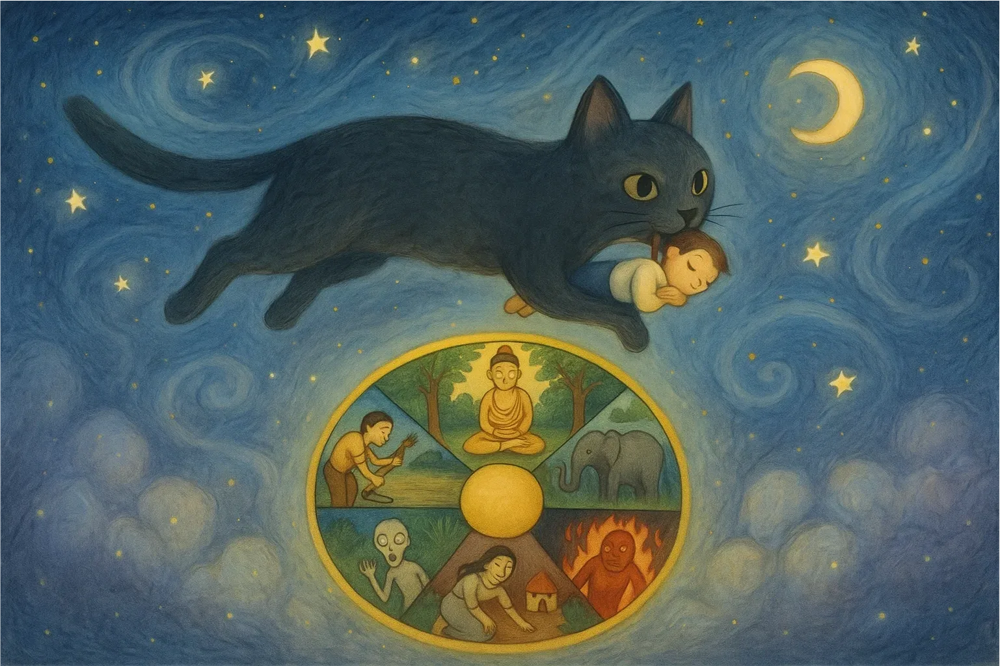

A single-player 3D RPG about emotional regulation, scaffolded on Buddhist cosmology — the Six Realms of Samsara. Built in Unity 6 with a small team. Two iterations in: a choice-driven open world that failed for specific reasons, then a rebuild around embodied interaction, compassionate systems, and a hum-dial whose win state is the player's own nervous system. My hats: narrative design, game design, 3D art, engineering, and pair-development with Claude Code.

Most titles in the space either gamify meditation — streaks, XP for breathing, lotus flowers that bloom on completion — or decorate a meditation app with game aesthetics. Both approaches preserve a split between the game part and the therapy part. The player experiences them as sequential: first I play, then I feel.
The Karma Project began by asking a different question: what if the game itself was the meditation — not an app wrapped around one? The scaffolding is Buddhist cosmology — the Six Realms of Samsara (God, Demi-god, Human, Animal, Hungry Ghost, Hell). Each realm encodes an emotional pattern — craving, rage, pride, fear — and each chapter asks the player (Sammy) to untie that pattern not by choosing a compassionate answer from a menu, but by enacting compassion through how the game is played.
Chapter 1, the MVP, is called "Serna and the Empty Cup" and stages the Hungry Ghost realm. The player meets Serna — a child whose visual design pins Buddhist preta iconography (distended glowing belly, dress of food wrappers, eyes that never quite land) onto the silhouette of a normal, sad little girl. A small black cat shadows the player as a silent companion. The teaching: generosity is the cure to emptiness. The mechanic: embodied giving, under adversarial timing, resolved by a hum that actually down-regulates the player's nervous system.
The art direction carries the thesis before the gameplay does. The Hungry Ghost realm is not hell. It is a warm-coloured, painterly, low-poly cartoon village — closer in visual grammar to Animal Crossing or A Short Hike than to Dark Souls. Trees are lollipop-green. The sky is a pink-violet sunset that never quite breaks. It is the "abundance" side of preta mythology — a world that looks like it has everything, filled with residents who cannot eat.
The signals of suffering are embedded, not announced:
The world smiles. The design does the talking.
Iteration 1 was a choice-driven open-world RPG in the Disco Elysium / Undertale tradition. It failed in playtesting for two reasons — choice fatigue and freeroam erosion, both covered below. The rebuild introduced four design moves, each a direct response to a specific failure mode. Together they define how the game now works.
In exploration, the camera is behind Sammy's shoulder; the player sees her body. In mini-games, the camera drops into her head and her hands appear — there is weight to what she carries, a lerp to how she lets go. The PlayerStateMachine contains six first-class states — Grounded, Airborne, Crouch, Carry, PushPull, Climb — each a teaching surface. Crouch is humility. Carry is the feel of holding something that matters. PushPull is the cost of moving the world. Climb is choosing difficulty. Borrowing directly from Little Nightmares' vocabulary, interaction is physical, not menu-based. When Sammy offers bread to a ghost, she walks up to them and holds it out. The body is the verb.
This is embodied cognition (Lakoff & Johnson; Barsalou) as literal implementation. Meaning held in the sensorimotor loop persists in a way that dialogue-box meaning does not.
The emotional architecture is built around three relationships, none of them loud:
Every objective in the quest system declares canFail and retryAllowed, and QuestManager.FailObjective() runs a multi-level cascade when the player stumbles:
canFail = false → Failure is ignored. The objective stays open. No scolding, no reset.canFail + retryAllowed → Progress resets. A gentle "Try Again" toast appears.canFail + !retryAllowed + isOptional → Objective is skipped. Quest continues gracefully.canFail + !retryAllowed + required + fallbackDialogueId → A flag is set. NPCs respond with compassionate fallback dialogue — a new branch authored for the version of the story where the player did not succeed.This is not a difficulty slider. It is a design stance: the game's response to the player's mistake is authored with the same care as its response to the player's success. In a game whose core teaching is that suffering arises from grasping, it would be incoherent for the game itself to grasp at its own fail states. The architecture enacts the thesis.
A side-effect: writing a chapter now means writing two threads — the version where Sammy gets it right, and the version where she doesn't. The second thread is often the more moving one.
Iteration 1 marked every objective with a quest marker. Iteration 2 introduces four visibility tiers on every objective — an engineered grammar for how loudly the game speaks:
This is the lever that cured iteration 1's freeroam problem. The world still has room to wander — but the information architecture of the wandering is now authored. A chapter about the Hungry Ghost realm can have Hidden beats — a dried-up bowl, a tree stripped of fruit, a ghost muttering the same phrase on loop — that register as tone rather than tasks.
Inside chapter arcs, the camera switches to first-person for mechanical set-pieces where the teaching is enacted. Three beats carry Chapter 1's argument.
Mechanically, Bird and Fish share engineering (throw arc, projectile, hit detection, timing windows). Emotionally, they are different nervous systems — compulsive, then anxious. Clean reuse, deliberate contrast.
The first prototype was a choice-driven open-world RPG in the Disco Elysium / Undertale tradition. Sammy spawned in the Hungry Ghost realm. A quest line moved her from NPC to NPC to the Temple of Ananda to Serna to a mini-game resolution and finally to an Artifact + Reflection Card + IRL Card. Karma was a ledger. Every NPC offered 2–3 dialogue choices.
Playtesting surfaced two specific failures:
The break came from replaying It Takes Two and Split Fiction (Hazelight Studios). These are couples-therapy co-op games in premise, but what matters is that the emotional arc of each chapter is enforced by the gameplay itself — when characters are at odds, the mechanics demand coordination anyway; when they misunderstand each other, the puzzles require perspective-swapping. The game teaches through asymmetric friction. Little Nightmares (Tarsier Studios) became the second anchor for its opposite move — entire arcs told through environment and silent objectives, never shouting instructions.
Together, these two references supplied the vocabulary the rebuild needed.
This is procedural rhetoric (Bogost, Persuasive Games, 2007) applied: games make claims through the rules they enforce, not the words they deliver. The axes shifted as follows:
The IRL card is an explicit gesture toward transfer (Perkins & Salomon, 1992) — the pedagogy principle that a lesson only counts when it crosses a context boundary. Without the IRL card, the game is therapy-theater. With it, the game is a bridge.
The karma meter survived from Iteration 1, but its inputs changed. It no longer responds to menu picks. It responds to mechanical choices under pressure: Good (karma + coins) for behaviors aligned with the chapter's practice; Neutral (coins) for survival play; Bad (karma penalty) for acting in alignment with the unhealed pattern when the game has offered an alternative. This shifts the moral signal from statement to habit — closer to BJ Fogg's Behavior Model, where preferences form through repeated motivation-ability-trigger loops, not declared intent.
The project runs on a layered, event-driven architecture. Zero Update() polling for cross-system communication. Every manager fires C# Action events; every UI element listens. Nine singletons under DontDestroyOnLoad. Chapter 1 runs at ~160 fps on desktop with the HUD, food-rain pool, NavMesh ghosts, and dialogue system live.
[SerializeReference] polymorphism. Any new action or condition is a single C# class that auto-appears in the Dialogue Editor via reflection. Adding a new verb to the game's moral vocabulary — ShowReflectionCard, OfferAlms, SitWithGhost — takes one file, zero core changes.Narrative designers write meaning; engineers don't bottleneck.
The project was built by a small team in a short window. The pipeline that made the scope tractable was as much about how intention became execution as it was about headcount.
[SerializeReference] + reflection means the game's moral verbs are open-ended by architecture, not by committee.HashSet<int> for animator param validation; manual backward loops to avoid RemoveAll allocation; 0.15s-coroutine with 2s cache instead of per-frame scans.This is not "AI wrote the game." It's that the ratio of intention to execution inverted. The human job became sharper — decide what Serna's silence should feel like; decide whether the fail-soft cascade should produce compassion or suspicion; decide which objectives should be Hidden — and the translation from decision to working build compressed to hours.
The category of "wellness games" is crowded and thin. Most titles either gamify meditation or decorate a meditation app with game aesthetics. Both approaches preserve the split between the game part and the therapy part. The Karma Project's argument is that this split is the bug.
The mechanic is the therapy. The system is the ethics. The aesthetic is the diagnosis.
When the player sustains a hum to close a chapter, the physiological down-regulation is not a side-effect — it is the win state. When Sammy carries a loaf of bread across a level and places it at the feet of a suffering ghost, the meaning is in the thumb holding the pickup button, not in the dialogue box that follows. When the Hungry Ghost realm is rendered as a pleasant-looking village full of lonely spirits eating uneatable food, the environment is teaching the chapter's thesis before any NPC has opened their mouth. When the player fails an objective and the game responds with a compassionate fallback instead of a reset, the architecture itself is rehearsing the lesson.
The pivot from Iteration 1 to Iteration 2 is, in the end, a pivot from games as carriers to games as the thing itself. Iteration 1 carried the lesson in dialogue; the game was the vehicle. In Iteration 2, the game is the lesson. Every layer — the state machine, the visibility tiers, the fail-soft cascade, the event architecture, the hum-dial, the silent cat, the uneaten cake on the bench — is an expression of the same thesis.
And that is, as it happens, a deeply Buddhist answer to a design problem.
↑ the win state of the game and the calm state of the player are the same event.